September 2006
"Enhanced" BZC
Introduction
Quoted directly from the project manager / main programmer Erik van 't Wout:
BASIC ASM (pronounced: "Basic Assembly") is a brand new programming language, designed for anyone who wants to get more power out of their calculator, without having to learn much. Of course, this last "much" is relative, you will not be able to get any advantage out of BASIC ASM within an hour, but it should be much easier to learn than Z80 Assembly.
BZC is a block structured language, with a very good human readable syntax, like Pascal, Algol or modern Basic. BZC is thé next step after TI-Basic, when you want more speed and more flexibility, but don't want to switch to pure assembler (yet). If we set the cost factor to step from TI-Basic into Assembler at 100, the step from TI-Basic into BZC is just 20, but gaining about 80% of the power of pure assembler.
For this brief evaluation we used the alpha release of BZC, version V0.1. For the test we used a number of small programs and one larger program: the game "connect-4" (sometimes known as "four-on-a-row"). Source view, including downloads,
library file. In JALcc we made an interface, comparable to TI-Basic, which also includes a simple pre-processor (called "enhanced" BZC) to overcome the (current) limitations of BZC.
Conclusion
With a number of workarounds we managed to get Connect-4 working correctly in "enhanced" BZC, functioning just like the TI-Basic version. As expected, the size increased from 2k to 3.5k, were an estimated quantity of 0.5 k is caused by the workarounds. The speed couldn't be measured accurately, but increased at least by a factor 5, probably with a factor 10. So the figures are as expected and indeed very good.
Although BZC looks very promising, as thé (most easiest) next step after TI-Basic with large enhancements compared to TI-Basic itself, version V0.1 can't yet make this statement true. The compiler feels very solid, but has too many (simple) bugs, libraries are not yet available so you still need to program reasonable parts in assembler, documentation needs some improvements. Even "Enhanced" BZC is not sufficient to write program-code in a relaxed way.
So my advice
Differences
Advantages
Disadvantage
"Enhanced" BZC
Because we felled in love for BZC as soon as we saw it, but found some constructs were missing en couldn't wait for the next release (which is expected for the end of 2006 and will fix many of these issues), we build a small pre-processor, making BZC even more easier to use. We called these extensions "enhanced-BZC". Most of the enhancements are completely in line with the plans of the official next release of BZC ???
Bugs / Weak points / Annoying issues / Wishes
It was not always clear if something we couldn't achieve, was due to a bug, something not / different defined in the language or just our stupidity. There everything we've put everything we didn't like, in this chapter (in the hope the authors will correct a lot of this in version v0.2). There's no particular order in the list below.
BZC, the name
"Very bad" ;-) chosen, because the string is too short to be googled on (also TI-calc.org refuses to search for it)
Brackets
Brackets are quit annoying at the moment, sometimes they must be inserted when it's not logical needed, but the most annoying thing is that you're not allowed to write redundant brackets (i.e. to make the code more readable).
put (beer+1) 27+12
doesn't work correctly and only stores 27
put (beer+1) (27+12)
works OK
coala = (GET (beer+1))
gives no compiler output
coala = GET (beer+1)
works OK
coala = (GET (beer+1)) + (GET (beer+1))
gives compiler error
If (key >= K0) AND (key <= K9) THEN
gives compiler error unbalanced ()
If key >= K0 AND key <= K9 THEN
doesn't work at all,
work around: use nested IF statements
Loop Until key >= K0 AND key <= K9
Loop While key >= K0 AND key <= K9
doesn't work, probably due the same reason
X1 = X + DX * (I - 4)
compiler error, unbalanced ()
Negative Numbers
aap = -2 (puts a space in between - and 2), work around: aap = 0 - 2
Use of normal Z80 registers
Use of Z80 registers as a "normal" variable should be discouraged. Using them can give very weird results. So either a warning or ....
|
this works |
this doesn't although "better" |
|
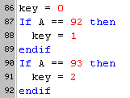 |
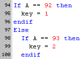 |
PRINTF and printf
I still don't understand what the difference is (or I can't remember it), these 2 functions are very confusing
string mess = "aap"
printf mess
crashed the compiler
NOT, <>
I miss these operators very much.
Bitwise logical operators
Would be very nice to have.
Documentation
Signed Math
Is this available ?
Compiler
Would be good if the compiler tells his version number in the output.
The compiler crashes regular and then wants to tell Bill about it. It would be nice if a debug facility (like MadExcept) was included.
Include
We could not get this to work ("Enhanced" BZC solves this)
Scope of variables
Function_Def Random
WORD _RDM
ASM
LD HL,_RDM ;point HL to _RDM (LSB first !!) <== _RDM not knwon
work around, declare the variable global
Concatenation
It would be nice to have a concatenation character, so a complex line can be split into more lines.
Break / Step
As a FOR loop is always preferred over a WHILE of REPEAT loop, you need a break to exit large loops.
A stepsize in a for loop would be nice.
Arrays
We need at least 1 and 2 dimensional byte and word arrays.
And maybe also the official TI-basic arrays, in which case start index will be very confusing (0, for byte and word, 1 for TI-basic).
Case Statement
Needed to make code far more readable.
Menu definition
should be simpler
Procedure definition
can be done simpler.
Preferable with the use of brackets.
Case Sensitive
Very annoying (and sometimes very confusing, see printf)
Comma's
instead of spaces, for better readability.
Enhanced BZC
Include
The normal include (not the #include) doesn't seem to work, therefor in enhanced BZC a quick and dirty 1 level include is implemented. One level means a library may not call other libraries, but you're allowed to include more than 1 library in the main program file. The library file is search first in the path of the main program, if not found the JALcc main directory is searched.
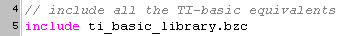
Menu Definition
Menu definitions are quit complex, because you have to define the items as constant strings first and you have to calculate all kinds of redundant numbers.
|
Enhanced |
Orginal |
|
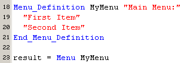 |
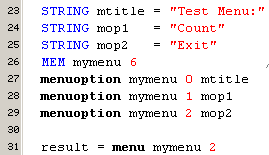 |
Procedure Definition
Although it is a good habit to declare a function before it's use, but it that case the declaration should be exactly the same as in the function definition (like in Pascal). So here we have removed the redundancy.
|
Enhanced |
Orginal |
|
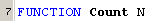 |
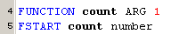 |
Case Insensitive
|
Enhanced |
Orginal |
|
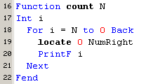 |
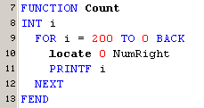 |
Direct strings as arguments
|
Enhanced |
Orginal |
|
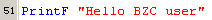 |
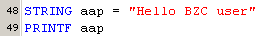 |
Comma's instead of spaces
|
Enhanced |
Orginal |
|
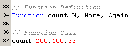 |
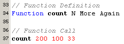 |
Arrays
|
Enhanced |
Orginal |
|
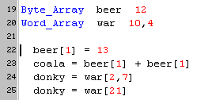 |
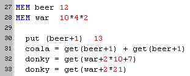 |
Case Statement
|
Enhanced |
Orginal |
|
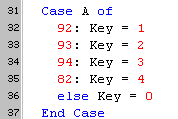 |
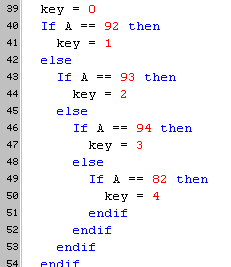 |
Parameter Passing
One of the obscure things in BZC is parameter passing. We thought by evaluating PrintF we could discover the details, but PrintF probably also gets some help from the compiler.
So here are the rules
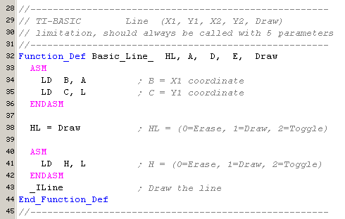
Some Renaming
Original naming can be used too.
At the moment Integer is changed to WORD.
And I still don't know if I like the underscore in End_If etc ???
|
Enhanced |
Oginal |
|
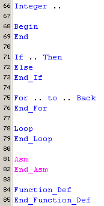 |
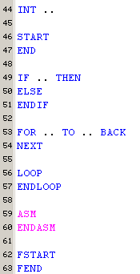 |